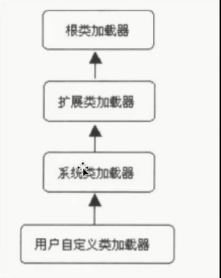

public class MyTest13 { <!-- more --> public static void main(String[] args) { ClassLoader classLoader = ClassLoader.getSystemClassLoader(); System.out.println(classLoader);
/** * Returns the system class loader for delegation. This is the default * delegation parent for new <tt>ClassLoader</tt> instances, and is * typically the class loader used to start the application. *返回一个针对委托的系统类加载器，并且他是默认新建类加载器实例的委托双亲（即自定义类加载器的父级，见下图），它是一个典型的启动应用的类加载器。 * <p> This method is first invoked early in the runtime's startup * sequence, at which point it creates the system class loader and sets it * as the context class loader of the invoking <tt>Thread</tt>. *此方法在运行期的早期就会被调用，在这个时间点创建系统类的加载器，并且设定其为调用线程的上下文的一个类加载器。 * <p> The default system class loader is an implementation-dependent * instance of this class. *默认的系统类加载器与这个类实现相关的实例 * <p> If the system property "<tt>java.system.class.loader</tt>" is defined * when this method is first invoked then the value of that property is * taken to be the name of a class that will be returned as the system * class loader. The class is loaded using the default system class loader * and must define a public constructor that takes a single parameter of * type <tt>ClassLoader</tt> which is used as the delegation parent. An * instance is then created using this constructor with the default system * class loader as the parameter. The resulting class loader is defined * to be the system class loader. * 如果设定了java.system.class.loader那么这个方法返回的就是java.system.class.loader设定的类加载器。这个类被系统类加载器加载，并且 * 定义一个公共的构造方法，接受一个ClassLoader参数用作为委托的双亲，用默认系统类类加载器作为构造器的参数，就会创造一个实例 ，所得到的就是系统类加载器 */ //返回系统类加载器 @CallerSensitive public static ClassLoader getSystemClassLoader() { initSystemClassLoader(); if (scl == null) { return null; } SecurityManager sm = System.getSecurityManager(); if (sm != null) { checkClassLoaderPermission(scl, Reflection.getCallerClass()); } return scl; }

getParent方法：
1 2 3 4 5 6 7 8 9 10 11 12 13 14 15 16 17 18 19
/** * Returns the parent class loader for delegation. Some implementations may * use <tt>null</tt> to represent the bootstrap class loader. This method * will return <tt>null</tt> in such implementations if this class loader's * parent is the bootstrap class loader. * 返回父加载器用于委托，有些实现返回null用来表示根类加载器，如果一个类的父加载器是根加载器，那么这个方法将会返回null */ public final ClassLoader getParent() { if (parent == null) return null; SecurityManager sm = System.getSecurityManager(); if (sm != null) { // Check access to the parent class loader // If the caller's class loader is same as this class loader, // permission check is performed. checkClassLoaderPermission(parent, Reflection.getCallerClass()); } return parent; }
parent 变量是ClassLoader的成员变量：
1 2 3 4 5
// The parent class loader for delegation // Note: VM hardcoded the offset of this field, thus all new fields // must be added *after* it. 用于委托的双亲加载器，JVM将这个变量的偏移量进行了硬编码，，这样新的变量就要加载这个变量的后边 private final ClassLoader parent;
public class MyTest14 { public static void main(String[] args) throws IOException { ClassLoader classLoader = Thread.currentThread().getContextClassLoader(); String resourceName = "com/twodragonlake/jvm/classloader/MyTest13.class"; /* Finds all the resources with the given name. A resource is some data (images, audio, text, etc) that can be accessed by class code in a way that is independent of the location of the code. 返回给定名字所有的资源，资源可以是（图片，音频，文本，等）可以被class字节码以一种与字节码位置无关的方式去访问， classLoader.getResources(resourceName){....} */ Enumeration<URL> urls = classLoader.getResources(resourceName); while(urls.hasMoreElements()){ System.out.println(urls.nextElement()); }